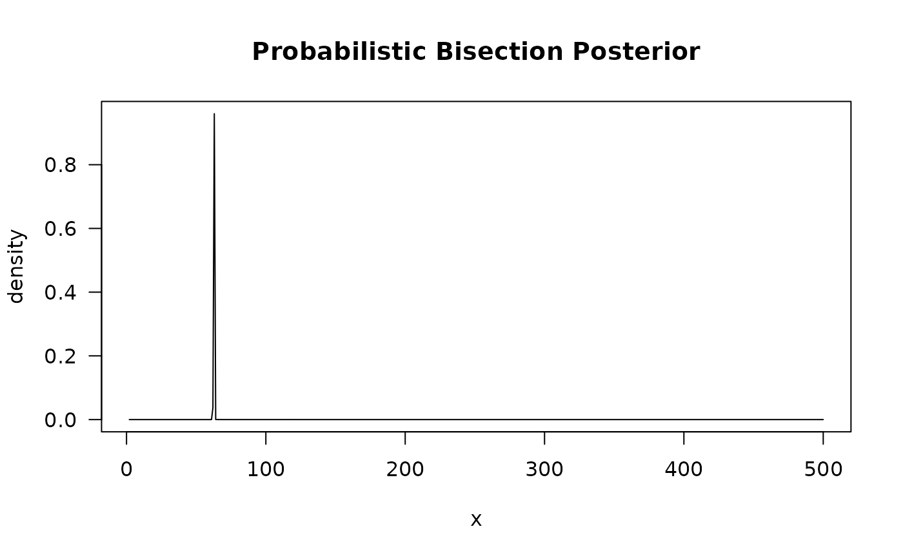
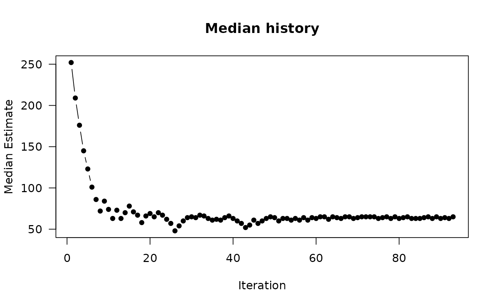
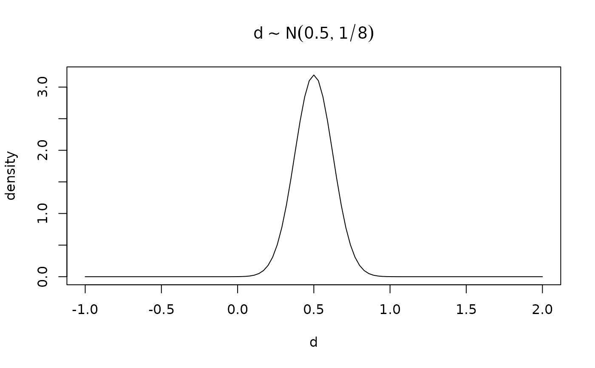
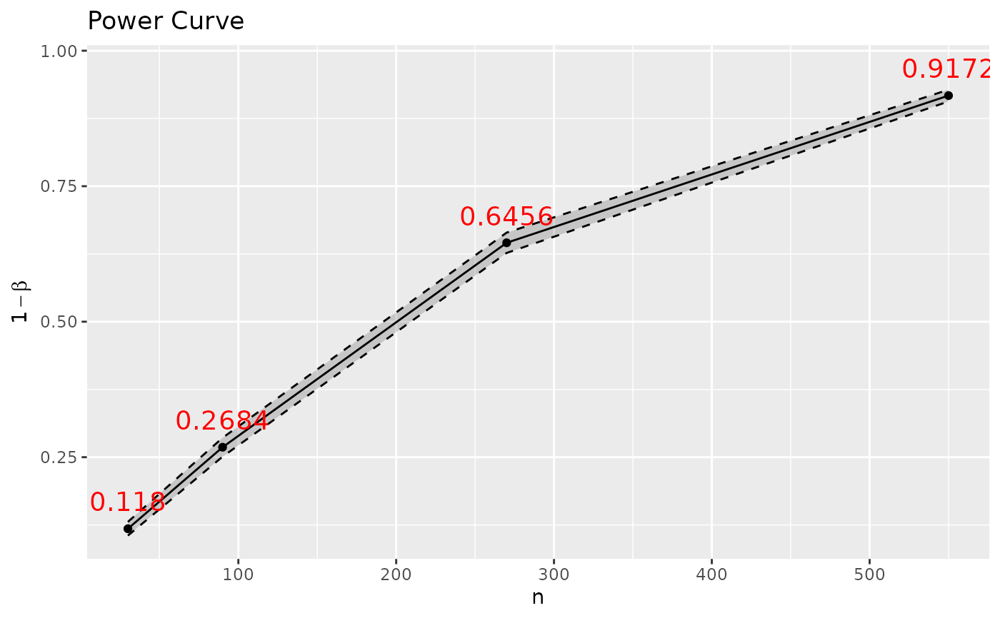
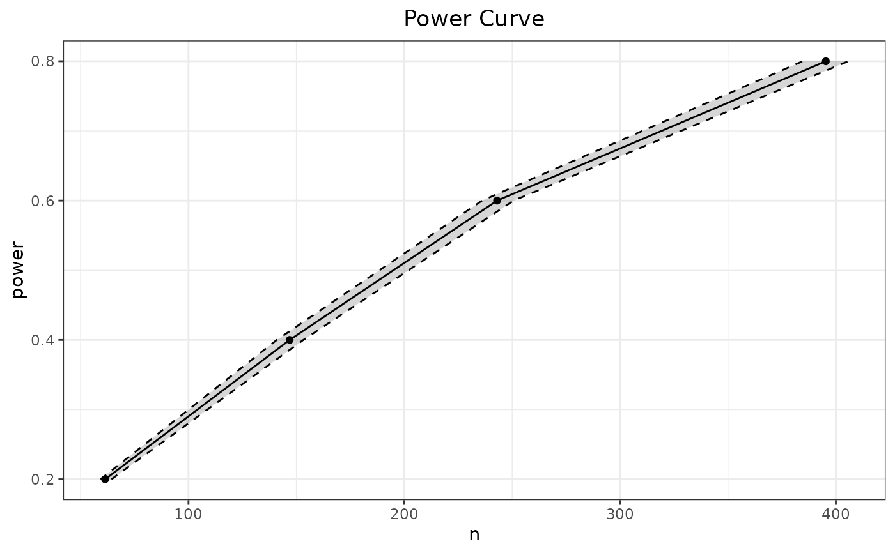
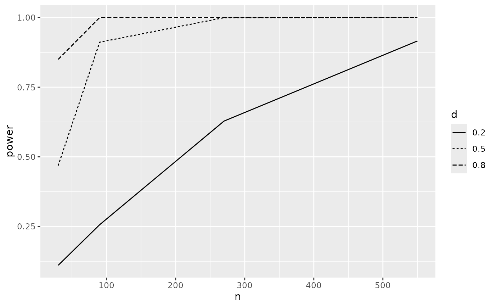

Simulation-based Power Analyses
Source:R/Spower.R, R/SpowerBatch.R, R/SpowerCurve.R, and 1 more
Spower.RdGeneral purpose function that provides power-focused estimates for
a priori, prospective/post-hoc, compromise, sensitivity, and criterion
power analysis. Function provides a general wrapper to the
SimDesign package's runSimulation and
SimSolve functions. As such, parallel processing is
automatically supported, along with progress bars,
confidence/predicted confidence intervals for the results estimates,
safety checks, and more.
The function SpowerBatch, on the other hand, can be used to
run Spower across
different simulation combinations, returning a list of results instead.
Can also be used as a pre-computing step before using
SpowerCurve, and shares the same syntax specification (see
SpowerCurve for further examples).
SpowerCurve draws power curves that either a) estimate the
power given a
set of varying conditions or b) solves a set of root conditions
given fixed values of power. Confidence/predicted confidence intervals are
included in the output to reflect the estimate uncertainties, though note
that fewer replications/iterations are used compared to
Spower as the goal is visualization of competing
variable inputs rather than precision of a given input.
Usage
Spower(
...,
power = NA,
sig.level = 0.05,
interval,
beta_alpha,
sig.direction = "below",
replications = 10000,
integer,
parallel = FALSE,
cl = NULL,
packages = NULL,
ncores = parallelly::availableCores(omit = 1L),
predCI = 0.95,
predCI.tol = 0.01,
verbose = interactive(),
check.interval = FALSE,
maxiter = 150,
wait.time = NULL,
lastSpower = NULL,
select = NULL,
control = list()
)
# S3 method for class 'Spower'
print(x, ...)
# S3 method for class 'Spower'
as.data.frame(x, ...)
SpowerBatch(
...,
interval = NULL,
power = NA,
sig.level = 0.05,
beta_alpha = NULL,
sig.direction = "below",
replications = 10000,
integer,
fully.crossed = TRUE,
parallel = FALSE,
cl = NULL,
ncores = parallelly::availableCores(omit = 1L),
predCI = 0.95,
predCI.tol = 0.01,
verbose = interactive(),
check.interval = FALSE,
maxiter = 150,
wait.time = NULL,
select = NULL,
control = list()
)
# S3 method for class 'SpowerBatch'
print(x, ...)
# S3 method for class 'SpowerBatch'
as.data.frame(x, ...)
SpowerCurve(
...,
interval = NULL,
power = NA,
sig.level = 0.05,
sig.direction = "below",
replications = 2500,
integer,
plotCI = TRUE,
plotly = TRUE,
parallel = FALSE,
cl = NULL,
ncores = parallelly::availableCores(omit = 1L),
predCI = 0.95,
predCI.tol = 0.01,
verbose = interactive(),
check.interval = FALSE,
maxiter = 50,
wait.time = NULL,
select = NULL,
batch = NULL,
control = list()
)
interval(lower, upper, integer, check.interval = FALSE)Arguments
- ...
expression to use in the simulation that returns a
numericvector containing either the p-value (under the null hypothesis), the probability of the alternative hypothesis in the Bayesian setting, where the first numeric value in this vector is treated as the focus for all analyses other than prospective/post-hoc power. This corresponds to thealphavalue used to flag samples as 'significant' when evaluating the null hypothesis (via p-values; \(P(D|H_0)\)), where any returned p-value less thatsig.levelindicates significance. However, ifsig.direction = 'above'then only values abovesig.levelare flagged as significant, which is useful in Bayesian posterior probability contexts that focus on the alternative hypothesis, \(P(H_1|D)\).Alternatively, a
logicalvector can be returned (e.g., when using confidence intervals (CIs) or evaluating regions of practical equivalence (ROPEs)), where the average of these TRUE/FALSE vector corresponds to the empirical power.Finally, a named
listordata.framecan be returned instead if there is need for more general, heterogeneous objects, however a specific element to extract must be specified using theselectargument to indicate which of the list elements are to be used in the power computations. All other elements from the simulation can, however, be extracted from theSimResultsfunction.For
SpowerCurveandSpowerBatch, first expression input must be identical to...inSpower, while the remaining named inputs must match the arguments to this expression to indicate which variables should be modified in the resulting power curves. ProvidingNAvalues is also supported to solve the missing component. Note that only the first three named arguments inSpowerCurvewill be plotted using the x-y, colour, and facet wrap aesthetics, respectively. However, if necessary the data can be extracted for further visualizations viaggplot_buildto provide more customized control- power
power level to use. If set to
NA(default) then the empirical power will be estimated given the fixed...inputs (e.g., for prospective/post-hoc power analysis). ForSpowerCurveandSpowerBatchthis can be a vector- sig.level
alpha level to use (default is
.05). If set toNAthen the value will be estimated given the fixedconditionsinput (e.g., for criterion power analysis). Only used when the value returned from the experiment is anumeric(e.g., a p-value, or a posterior probability; seesig.direction).If the return of the supplied experiment is a
logicalthen this argument will be entirely ignored. As such, arguments such asconf.levelshould be included in the simulation experiment definition itself to indicate the explicit inferential criteria, and so that this argument can be manipulated should the need arise.- interval
required search interval to use when
SimSolveis called to perform stochastic root solving. Note that for compromise analyses, where thesig.levelis set toNA, if not set explicitly then the interval will default toc(0,1).Alternatively, though only for the function
Spower(), the functionintervalcan be used within the experiment function definition where the canonicalNAplaceholder is used. Arguments fromintervalwill then be extracted and passed toSpoweras usual. Note that this is not supported inSpowerBatchandSpowerCurveas multiple interval definitions are often required; hence,NAplaceholders are always required in these wrapper functions- beta_alpha
(optional) ratio to use in compromise analyses corresponding to the Type II errors (beta) over the Type I error (alpha). Ratios greater than \(q = \beta/\alpha = 1\) indicate that Type I errors are worse than Type II, while ratios less than one the opposite. A ratio equal to 1 gives an equal trade-off between Type I and Type II errors
- sig.direction
a character vector that is either
'below'(default) or'above'to indicate which direction relative tosig.levelis considered significant. This is useful, for instance, when forming cutoffs for Bayesian posterior probabilities organized to show support for the hypothesis of interest (\(P(H_1|D)\)). As an example, settingsig.level = .95withsig.direction = 'above'flags a sample as 'significant' whenever the posterior probability is greater than .95.- replications
number of replications to use when
runSimulationis required. Default is 10000, though set to 2500 forSpowerCurve- integer
a logical value indicating whether the search iterations use integers or doubles.
If missing, automatically set to
FALSEifintervalcontains non-integer numbers or the range is less than 5, as well as whensig.level = NA- parallel
for parallel computing for slower simulation experiments (see
runSimulationfor details).- cl
see
runSimulation- packages
see
runSimulation- ncores
see
runSimulation- predCI
predicting confidence interval level (see
SimSolve)- predCI.tol
predicting confidence interval consistency tolerance for stochastic root solver convergence (see
SimSolve). Default converges when the power rate CI is consistently within.01/2of the target power- verbose
logical; should information be printed to the console? By default this is determined based on whether the session is interactive or not
- check.interval
logical; check the interval range validity (see
SimSolve). Disabled by default- maxiter
maximum number of stochastic root-solving iterations. Default is 150, though set to 50 for
SpowerCurve- wait.time
(optional) argument to indicate the time to wait (specified in minutes if supplied as a numeric vector). See
SimSolvefor details and SeetimeFormaterfor further specifications- lastSpower
a previously returned
Spowerobject to be updated. Use this if you want to continue where an estimate left off but wish to increase the precision (e.g., by adding more replications, or by letting the stochastic root solver continue searching).Note that if the object was not stored use
getLastSpowerto obtain the last estimated power object- select
a character vector indicating which elements to extract from the provided stimulation experiment function. By default, all elements from the provided function will be used, however if the provided function contains information not relevant to the power computations (e.g., parameter estimates, standard errors, etc) then these should be ignored. To extract the complete results post-analysis use
SimResultsto allow manual summarizing of the stored results (applicable only with prospective/post-hoc power)- control
a list of control parameters to pass to
runSimulationorSimSolve- x
object of class
'Spower'. IfSpowerBatchwere used the this will be alist- fully.crossed
logical; should the supplied conditions to
SpowerBatchbe fully crossed? Passed to the same argument documented increateDesign- plotCI
logical; include confidence/predicted confidence intervals in plots?
- plotly
logical; draw the graphic into the interactive
plotlyinterface? IfFALSEthe ggplot2 object will be returned instead- batch
if
SpowerBatchwere previously used to perform the computations then this information can be provided to thisbatchargument to avoid recomputing- lower
lower bound for stochastic search interval. If input contains a decimal then
Spower(..., integer)will be set toFALSE- upper
upper bound for stochastic search interval. If input contains a decimal then
Spower(..., integer)will be set toFALSE
Value
an invisible tibble/data.frame-type object of
class 'Spower' containing the power results from the
simulation experiment
a ggplot2 object automatically rendered with
plotly for interactivity
Details
Five types of power analysis flavors can be performed with Spower,
which are triggered based on which supplied input is set to
missing (NA):
- A Priori
Solve for a missing sample size component (e.g.,
n) to achieve a specific target power rate- Prospective and Post-hoc
Estimate the power rate given a set of fixed conditions. If estimates of effect sizes and other empirical characteristics (e.g., observed sample size) are supplied this results in observed/retrospective power (not recommended), while if only sample size is included as the observed quantity, but the effect sizes are treated as unknown, then this results in post-hoc power (Cohen, 1988)
- Sensitivity
Solve a missing effect size value as a function of the other supplied constant components
- Criterion
Solve the error rate (argument
sig.level) as a function of the other supplied constant components- Compromise
Solve a Type I/Type II error trade-off ratio as a function of the other supplied constant components and the target ratio \(q = \beta/\alpha\) (argument
beta_alpha)
To understand how the package is structured, the first expression in
the ... argument, which contains the simulation experiment
definition for a single sample,
is passed to either SimSolve or
runSimulation depending on which element (including
the power and sig.level arguments) is set to NA.
For instance, Spower(p_t.test(n=50, d=.5)) will perform a
prospective/post-hoc power evaluation since power = NA by default,
while Spower(p_t.test(n=NA, d=.5), power = .80) or,
equivalently, Spower(p_t.test(n=interval(.,.), d=.5), power = .80),
will perform an a priori power analysis to solve the missing
n argument.
For expected power computations, the arguments to the simulation
experiment arguments can be specified as a function to reflect
the prior uncertainty. For instance, if
d_prior <- function() rnorm(1, mean=.5, sd=1/8) then
Spower(p_t.test(n=50, d=d_prior()) will compute the expected power
over the prior sampling distribution for d
See also
update, SpowerCurve,
getLastSpower, is.CI_within,
is.outside_CI
Spower, SpowerBatch
Author
Phil Chalmers rphilip.chalmers@gmail.com
Examples
############################
# Independent samples t-test
############################
# Internally defined p_t.test function
args(p_t.test) # missing arguments required
#> function (n, d, mu = 0, r = NULL, type = "two.sample", n2_n1 = 1,
#> two.tailed = TRUE, var.equal = TRUE, means = NULL, sds = NULL,
#> conf.level = 0.95, gen_fun = gen_t.test, return_analysis = FALSE,
#> ...)
#> NULL
# help(p_t.test) # additional information
# p_* functions generate data and return single p-value
p_t.test(n=50, d=.5)
#> [1] 0.2536089
p_t.test(n=50, d=.5)
#> [1] 0.08591039
# test that it works
Spower(p_t.test(n = 50, d = .5), replications=10)
#>
#> Execution time (H:M:S): 00:00:00
#> Design conditions:
#>
#> # A tibble: 1 × 4
#> n d sig.level power
#> <dbl> <dbl> <dbl> <lgl>
#> 1 50 0.5 0.05 NA
#>
#> Estimate of power: 0.800
#> 95% Confidence Interval: [0.552, 1.000]
# also behaves naturally with a pipe
p_t.test(n = 50, d = .5) |> Spower(replications=10)
#>
#> Execution time (H:M:S): 00:00:00
#> Design conditions:
#>
#> # A tibble: 1 × 4
#> n d sig.level power
#> <dbl> <dbl> <dbl> <lgl>
#> 1 50 0.5 0.05 NA
#>
#> Estimate of power: 0.800
#> 95% Confidence Interval: [0.552, 1.000]
# \donttest{
# Estimate power given fixed inputs (prospective power analysis)
out <- Spower(p_t.test(n = 50, d = .5))
summary(out) # extra information
#> $sessionInfo
#> ─ Session info ───────────────────────────────────────────────────────────────
#> setting value
#> version R version 4.5.2 (2025-10-31)
#> os Ubuntu 24.04.3 LTS
#> system x86_64, linux-gnu
#> ui X11
#> language en
#> collate C
#> ctype C.UTF-8
#> tz UTC
#> date 2026-02-13
#> pandoc 3.1.11 @ /opt/hostedtoolcache/pandoc/3.1.11/x64/ (via rmarkdown)
#> quarto NA
#>
#> ─ Packages ───────────────────────────────────────────────────────────────────
#> package * version date (UTC) lib source
#> abind 1.4-8 2024-09-12 [1] RSPM
#> askpass 1.2.1 2024-10-04 [1] RSPM
#> audio 0.1-12 2025-12-15 [1] RSPM
#> beepr 2.0 2024-07-06 [1] RSPM
#> brio 1.1.5 2024-04-24 [1] RSPM
#> bslib 0.10.0 2026-01-26 [1] RSPM
#> cachem 1.1.0 2024-05-16 [1] RSPM
#> car 3.1-5 2026-02-03 [1] RSPM
#> carData 3.0-6 2026-01-30 [1] RSPM
#> class 7.3-23 2025-01-01 [3] CRAN (R 4.5.2)
#> cli 3.6.5 2025-04-23 [1] RSPM
#> clipr 0.8.0 2022-02-22 [1] RSPM
#> cocor 1.1-4 2022-06-28 [1] RSPM
#> codetools 0.2-20 2024-03-31 [3] CRAN (R 4.5.2)
#> curl 7.0.0 2025-08-19 [1] RSPM
#> data.table 1.18.2.1 2026-01-27 [1] RSPM
#> desc 1.4.3 2023-12-10 [1] RSPM
#> digest 0.6.39 2025-11-19 [1] RSPM
#> downlit 0.4.5 2025-11-14 [1] RSPM
#> dplyr 1.2.0 2026-02-03 [1] RSPM
#> e1071 1.7-17 2025-12-18 [1] RSPM
#> EnvStats 3.1.0 2025-04-24 [1] RSPM
#> evaluate 1.0.5 2025-08-27 [1] RSPM
#> fansi 1.0.7 2025-11-19 [1] RSPM
#> farver 2.1.2 2024-05-13 [1] RSPM
#> fastmap 1.2.0 2024-05-15 [1] RSPM
#> fontawesome 0.5.3 2024-11-16 [1] RSPM
#> Formula 1.2-5 2023-02-24 [1] RSPM
#> fs 1.6.6 2025-04-12 [1] RSPM
#> future 1.69.0 2026-01-16 [1] RSPM
#> future.apply 1.20.1 2025-12-09 [1] RSPM
#> generics 0.1.4 2025-05-09 [1] RSPM
#> ggplot2 4.0.2 2026-02-03 [1] RSPM
#> globals 0.19.0 2026-02-02 [1] RSPM
#> glue 1.8.0 2024-09-30 [1] RSPM
#> gtable 0.3.6 2024-10-25 [1] RSPM
#> htmltools 0.5.9 2025-12-04 [1] RSPM
#> htmlwidgets 1.6.4 2023-12-06 [1] RSPM
#> httr 1.4.7 2023-08-15 [1] RSPM
#> httr2 1.2.2 2025-12-08 [1] RSPM
#> jquerylib 0.1.4 2021-04-26 [1] RSPM
#> jsonlite 2.0.0 2025-03-27 [1] RSPM
#> knitr 1.51 2025-12-20 [1] RSPM
#> lavaan 0.6-21 2025-12-21 [1] RSPM
#> lazyeval 0.2.2 2019-03-15 [1] RSPM
#> lifecycle 1.0.5 2026-01-08 [1] RSPM
#> listenv 0.10.0 2025-11-02 [1] RSPM
#> magrittr 2.0.4 2025-09-12 [1] RSPM
#> memoise 2.0.1 2021-11-26 [1] RSPM
#> mnormt 2.1.2 2026-01-27 [1] RSPM
#> openssl 2.3.4 2025-09-30 [1] RSPM
#> otel 0.2.0 2025-08-29 [1] RSPM
#> parallelly 1.46.1 2026-01-08 [1] RSPM
#> pbapply 1.7-4 2025-07-20 [1] RSPM
#> pbivnorm 0.6.0 2015-01-23 [1] RSPM
#> pillar 1.11.1 2025-09-17 [1] RSPM
#> pkgconfig 2.0.3 2019-09-22 [1] RSPM
#> pkgdown 2.2.0 2025-11-06 [1] any (@2.2.0)
#> plotly 4.12.0 2026-01-24 [1] RSPM
#> progressr 0.18.0 2025-11-06 [1] RSPM
#> proxy 0.4-29 2025-12-29 [1] RSPM
#> purrr 1.2.1 2026-01-09 [1] RSPM
#> quadprog 1.5-8 2019-11-20 [1] RSPM
#> R.methodsS3 1.8.2 2022-06-13 [1] RSPM
#> R.oo 1.27.1 2025-05-02 [1] RSPM
#> R.utils 2.13.0 2025-02-24 [1] RSPM
#> R6 2.6.1 2025-02-15 [1] RSPM
#> ragg 1.5.0 2025-09-02 [1] RSPM
#> rappdirs 0.3.4 2026-01-17 [1] RSPM
#> RColorBrewer 1.1-3 2022-04-03 [1] RSPM
#> rlang 1.1.7 2026-01-09 [1] RSPM
#> rmarkdown 2.30 2025-09-28 [1] RSPM
#> S7 0.2.1 2025-11-14 [1] RSPM
#> sass 0.4.10 2025-04-11 [1] RSPM
#> scales 1.4.0 2025-04-24 [1] RSPM
#> sessioninfo 1.2.3 2025-02-05 [1] RSPM
#> SimDesign * 2.23 2026-02-10 [1] RSPM
#> Spower * 0.6 2026-02-13 [1] local
#> systemfonts 1.3.1 2025-10-01 [1] RSPM
#> testthat 3.3.2 2026-01-11 [1] RSPM
#> textshaping 1.0.4 2025-10-10 [1] RSPM
#> tibble 3.3.1 2026-01-11 [1] RSPM
#> tidyr 1.3.2 2025-12-19 [1] RSPM
#> tidyselect 1.2.1 2024-03-11 [1] RSPM
#> vctrs 0.7.1 2026-01-23 [1] RSPM
#> viridisLite 0.4.3 2026-02-04 [1] RSPM
#> whisker 0.4.1 2022-12-05 [1] RSPM
#> withr 3.0.2 2024-10-28 [1] RSPM
#> xfun 0.56 2026-01-18 [1] RSPM
#> xml2 1.5.2 2026-01-17 [1] RSPM
#> yaml 2.3.12 2025-12-10 [1] RSPM
#>
#> [1] /home/runner/work/_temp/Library
#> [2] /opt/R/4.5.2/lib/R/site-library
#> [3] /opt/R/4.5.2/lib/R/library
#> * ── Packages attached to the search path.
#>
#> ──────────────────────────────────────────────────────────────────────────────
#>
#> $packages
#> packages versions
#> 1 Spower 0.6
#>
#> $seeds
#> [1] 1629703387
#>
#> $ncores
#> [1] 1
#>
#> $date_completed
#> [1] Fri Feb 13 17:43:05 2026
#>
#> $total_elapsed_time
#> [1] 2.95s
#>
#> $SEED_history
#> [1] 1629703387
#>
#> $power.CI
#> CI_2.5 CI_97.5
#> power 0.6805321 0.6986679
#>
as.data.frame(out) # coerced to data.frame
#> n d sig.level power CI_2.5 CI_97.5
#> power 50 0.5 0.05 0.6896 0.6805321 0.6986679
# increase precision (not run)
# p_t.test(n = 50, d = .5) |> Spower(replications=30000)
# alternatively, increase precision from previous object.
# Here we add 20000 more replications on top of the previous 10000
p_t.test(n = 50, d = .5) |>
Spower(replications=20000, lastSpower=out) -> out2
out2$REPLICATIONS # total of 30000 replications for estimate
#> [1] 30000
# previous analysis not stored to object, but can be retrieved
out <- getLastSpower()
out # as though it were stored from Spower()
#>
#> Execution time (H:M:S): 00:00:05
#> Design conditions:
#>
#> # A tibble: 1 × 4
#> n d sig.level power
#> <dbl> <dbl> <dbl> <lgl>
#> 1 50 0.5 0.05 NA
#>
#> Estimate of power: 0.691
#> 95% Confidence Interval: [0.686, 0.697]
# Same as above, but executed with multiple cores (not run)
p_t.test(n = 50, d = .5) |>
Spower(replications=30000, parallel=TRUE, ncores=2)
#>
#> Execution time (H:M:S): 00:00:04
#> Design conditions:
#>
#> # A tibble: 1 × 4
#> n d sig.level power
#> <dbl> <dbl> <dbl> <lgl>
#> 1 50 0.5 0.05 NA
#>
#> Estimate of power: 0.700
#> 95% Confidence Interval: [0.695, 0.705]
# Solve N to get .80 power (a priori power analysis)
p_t.test(n = interval(2,500), d = .5) |> Spower(power=.8) -> out
summary(out) # extra information
#> $root
#> [1] 63.20207
#>
#> $predCI.root
#> CI_2.5 CI_97.5
#> 62.54397 63.86085
#>
#> $b
#> [1] 0.8
#>
#> $predCI.b
#> [1] 0.7951549 0.8047590
#>
#> $terminated_early
#> [1] TRUE
#>
#> $time
#> [1] 37.82s
#>
#> $iterations
#> [1] 145
#>
#> $total.replications
#> [1] 55400
#>
#> $tab
#> y x reps
#> 7 0.7594595 60 370
#> 8 0.7848312 61 21030
#> 9 0.7914634 62 10660
#> 10 0.7984745 63 19010
#> 11 0.8091954 64 870
#> 12 0.8088496 65 1130
#> 13 0.8021739 67 460
#> 15 0.8222222 69 450
#>
plot(out)

plot(out, type = 'history')

# total sample size required
ceiling(out$n) * 2
#> [1] 128
# equivalently, using NA within the experiment definition
p_t.test(n = NA, d = .5) |> Spower(power=.8, interval=c(2,500))
#>
#> Execution time (H:M:S): 00:00:26
#> Design conditions:
#>
#> # A tibble: 1 × 4
#> n d sig.level power
#> <dbl> <dbl> <dbl> <dbl>
#> 1 NA 0.5 0.05 0.8
#>
#> Estimate of n: 64.1
#> 95% Predicted Confidence Interval: [63.3, 64.9]
# same as above, but in parallel with 2 cores
out.par <- p_t.test(n = interval(2,500), d = .5) |>
Spower(power=.8, parallel=TRUE, ncores=2)
summary(out.par)
#> $root
#> [1] 63.19998
#>
#> $predCI.root
#> CI_2.5 CI_97.5
#> 62.55317 63.91759
#>
#> $b
#> [1] 0.8
#>
#> $predCI.b
#> [1] 0.7950159 0.8048931
#>
#> $terminated_early
#> [1] TRUE
#>
#> $time
#> [1] 43.28s
#>
#> $iterations
#> [1] 126
#>
#> $total.replications
#> [1] 45900
#>
#> $tab
#> y x reps
#> 4 0.7647059 60 340
#> 5 0.7805012 61 12770
#> 6 0.7880565 62 9210
#> 7 0.8008004 63 19990
#> 8 0.8000000 64 780
#> 9 0.8083333 65 840
#> 10 0.8043478 66 460
#>
# similar information from pwr package
(pwr <- pwr::pwr.t.test(d=.5, power=.80))
#>
#> Two-sample t test power calculation
#>
#> n = 63.76561
#> d = 0.5
#> sig.level = 0.05
#> power = 0.8
#> alternative = two.sided
#>
#> NOTE: n is number in *each* group
#>
ceiling(pwr$n) * 2
#> [1] 128
# If greater precision is required and the user has a specific amount of
# time they are willing to wait (e.g., 5 minutes) then wait.time can be used.
# Below estimates root after searching for 1 minute, and run in parallel
# with 2 cores (not run)
p_t.test(n = interval(2,500), d = .5) |>
Spower(power=.8, wait.time='1', parallel=TRUE, ncores=2)
#>
#> Execution time (H:M:S): 00:01:00
#> Design conditions:
#>
#> # A tibble: 1 × 4
#> n d sig.level power
#> <dbl> <dbl> <dbl> <dbl>
#> 1 NA 0.5 0.05 0.8
#>
#> Estimate of n: 63.3
#> 95% Predicted Confidence Interval: [62.8, 63.7]
# Similar to above for precision improvements, however letting
# the root solver continue searching from an early search history.
# Usually a good idea to increase the maxiter and lower the predCI.tol
p_t.test(n = interval(2,500), d = .5) |>
Spower(power=.8, lastSpower=out,
maxiter=200, predCI.tol=.008) #starts at last iteration in "out"
#>
#> Execution time (H:M:S): 00:00:17
#> Design conditions:
#>
#> # A tibble: 1 × 4
#> n d sig.level power
#> <dbl> <dbl> <dbl> <dbl>
#> 1 NA 0.5 0.05 0.8
#>
#> Estimate of n: 63.3
#> 95% Predicted Confidence Interval: [62.8, 63.8]
# Solve d to get .80 power (sensitivity power analysis)
p_t.test(n = 50, d = interval(.1, 2)) |> Spower(power=.8)
#>
#> Execution time (H:M:S): 00:00:16
#> Design conditions:
#>
#> # A tibble: 1 × 4
#> n d sig.level power
#> <dbl> <dbl> <dbl> <dbl>
#> 1 50 NA 0.05 0.8
#>
#> Estimate of d: 0.565
#> 95% Predicted Confidence Interval: [0.560, 0.570]
pwr::pwr.t.test(n=50, power=.80) # compare
#>
#> Two-sample t test power calculation
#>
#> n = 50
#> d = 0.565858
#> sig.level = 0.05
#> power = 0.8
#> alternative = two.sided
#>
#> NOTE: n is number in *each* group
#>
# Solve alpha that would give power of .80 (criterion power analysis)
# interval not required (set to interval = c(0, 1))
p_t.test(n = 50, d = .5) |> Spower(power=.80, sig.level=NA)
#>
#> Execution time (H:M:S): 00:00:18
#> Design conditions:
#>
#> # A tibble: 1 × 4
#> n d sig.level power
#> <dbl> <dbl> <dbl> <dbl>
#> 1 50 0.5 NA 0.8
#>
#> Estimate of sig.level: 0.098
#> 95% Predicted Confidence Interval: [0.095, 0.100]
# Solve beta/alpha ratio to specific error trade-off constant
# (compromise power analysis)
out <- p_t.test(n = 50, d = .5) |> Spower(beta_alpha = 2)
with(out, (1-power)/sig.level) # solved ratio
#> [1] 2
# update beta_alpha criteria without re-simulating
(out2 <- update(out, beta_alpha=4))
#>
#> Execution time (H:M:S): 00:00:02
#> Design conditions:
#>
#> # A tibble: 1 × 5
#> n d sig.level power beta_alpha
#> <dbl> <dbl> <dbl> <lgl> <dbl>
#> 1 50 0.5 NA NA 4
#>
#> Estimate of Type I error rate (alpha/sig.level): 0.065
#> 95% Confidence Interval: [0.061, 0.070]
#>
#> Estimate of power (1-beta): 0.738
#> 95% Confidence Interval: [0.730, 0.747]
with(out2, (1-power)/sig.level) # solved ratio
#> [1] 4
##############
# Power Curves
##############
# SpowerCurve() has similar input, though requires varying argument
p_t.test(d=.5) |> SpowerCurve(n=c(30, 60, 90))
# solve n given power and plot
p_t.test(n=NA, d=.5) |> SpowerCurve(power=c(.2, .5, .8), interval=c(2,500))
# multiple varying components
p_t.test() |> SpowerCurve(n=c(30,60,90), d=c(.2, .5, .8))
################
# Expected Power
################
# Expected power computed by including effect size uncertainty.
# For instance, belief is that the true d is somewhere around d ~ N(.5, 1/8)
dprior <- function(x, mean=.5, sd=1/8) dnorm(x, mean=mean, sd=sd)
curve(dprior, -1, 2, main=expression(d %~% N(0.5, 1/8)),
xlab='d', ylab='density')

# For Spower, define prior sampler for specific parameter(s)
d_prior <- function() rnorm(1, mean=.5, sd=1/8)
d_prior(); d_prior(); d_prior()
#> [1] 0.5205941
#> [1] 0.3598542
#> [1] 0.5051347
# Replace d constant with d_prior to compute expected power
p_t.test(n = 50, d = d_prior()) |> Spower()
#> Error in d_prior(): could not find function "d_prior"
# A priori power analysis using expected power
p_t.test(n = interval(2,500), d = d_prior()) |> Spower(power=.8)
#> Error in d_prior(): could not find function "d_prior"
pwr::pwr.t.test(d=.5, power=.80) # expected power result higher than fixed d
#>
#> Two-sample t test power calculation
#>
#> n = 63.76561
#> d = 0.5
#> sig.level = 0.05
#> power = 0.8
#> alternative = two.sided
#>
#> NOTE: n is number in *each* group
#>
###############
# Customization
###############
# Make edits to the function for customization
if(interactive()){
p_my_t.test <- edit(p_t.test)
args(p_my_t.test)
body(p_my_t.test)
}
# Alternatively, define a custom function (potentially based on the template)
p_my_t.test <- function(n, d, var.equal=FALSE, n2_n1=1, df=10){
# Welch power analysis with asymmetric distributions
# group2 as large as group1 by default
# degree of skewness controlled via chi-squared distribution's df
group1 <- rchisq(n, df=df)
group1 <- (group1 - df) / sqrt(2*df) # Adjusted mean to 0, sd = 1
group2 <- rnorm(n*n2_n1, mean=d)
dat <- data.frame(group = factor(rep(c('G1', 'G2'),
times = c(n, n*n2_n1))),
DV = c(group1, group2))
obj <- t.test(DV ~ group, dat, var.equal=var.equal)
p <- obj$p.value
p
}
# Solve N to get .80 power (a priori power analysis), using defaults
p_my_t.test(n = interval(2,500), d = .5, n2_n1=2) |>
Spower(power=.8) -> out
# total sample size required
with(out, ceiling(n) + ceiling(n * 2))
#> [1] 150
# Solve N to get .80 power (a priori power analysis), assuming
# equal variances, group2 2x as large as group1, large skewness
p_my_t.test(n = interval(30,100), d=.5, var.equal=TRUE, n2_n1=2, df=3) |>
Spower(power=.8) -> out2
# total sample size required
with(out2, ceiling(n) + ceiling(n * 2))
#> [1] 149
# prospective power, can be used to extract the adjacent information
p_my_t.test(n = 100, d = .5) |> Spower() -> post
###############################
# Using CIs instead of p-values
###############################
# CI test returning TRUE if psi0 is outside the 95% CI
ci_ind.t.test <- function(n, d, psi0=0, conf.level=.95){
g1 <- rnorm(n)
g2 <- rnorm(n, mean=d)
CI <- t.test(g2, g1, var.equal=TRUE,conf.level=conf.level)$conf.int
is.outside_CI(psi0, CI)
}
# returns logical
ci_ind.t.test(n=100, d=.2)
#> [1] FALSE
ci_ind.t.test(n=100, d=.2)
#> [1] FALSE
# simulated prospective power
ci_ind.t.test(n=100, d=.2) |> Spower()
#>
#> Execution time (H:M:S): 00:00:02
#> Design conditions:
#>
#> # A tibble: 1 × 4
#> n d sig.level power
#> <dbl> <dbl> <dbl> <lgl>
#> 1 100 0.2 0.05 NA
#>
#> Estimate of power: 0.296
#> 95% Confidence Interval: [0.287, 0.305]
# compare to pwr package
pwr::pwr.t.test(n=100, d=.2)
#>
#> Two-sample t test power calculation
#>
#> n = 100
#> d = 0.2
#> sig.level = 0.05
#> power = 0.2906459
#> alternative = two.sided
#>
#> NOTE: n is number in *each* group
#>
############################
# Equivalence test power using CIs
#
# H0: population d is outside interval [LB, UB] (not tolerably equivalent)
# H1: population d is within interval [LB, UB] (tolerably equivalent)
# CI test returning TRUE if CI is within tolerable equivalence range (tol)
ci_equiv.t.test <- function(n, d, tol, conf.level=.95){
g1 <- rnorm(n)
g2 <- rnorm(n, mean=d)
CI <- t.test(g2, g1, var.equal=TRUE,conf.level=conf.level)$conf.int
is.CI_within(CI, tol)
}
# evaluate if CI is within tolerable interval (tol)
ci_equiv.t.test(n=1000, d=.2, tol=c(.1, .3))
#> [1] FALSE
# simulated prospective power
ci_equiv.t.test(n=1000, d=.2, tol=c(.1, .3)) |> Spower()
#>
#> Execution time (H:M:S): 00:00:03
#> Design conditions:
#>
#> # A tibble: 1 × 4
#> n d sig.level power
#> <dbl> <dbl> <dbl> <lgl>
#> 1 1000 0.2 0.05 NA
#>
#> Estimate of power: 0.215
#> 95% Confidence Interval: [0.207, 0.223]
# higher power with larger N (more precision) or wider tol interval
ci_equiv.t.test(n=2000, d=.2, tol=c(.1, .3)) |> Spower()
#>
#> Execution time (H:M:S): 00:00:04
#> Design conditions:
#>
#> # A tibble: 1 × 4
#> n d sig.level power
#> <dbl> <dbl> <dbl> <lgl>
#> 1 2000 0.2 0.05 NA
#>
#> Estimate of power: 0.772
#> 95% Confidence Interval: [0.764, 0.780]
ci_equiv.t.test(n=1000, d=.2, tol=c(.1, .5)) |> Spower()
#>
#> Execution time (H:M:S): 00:00:03
#> Design conditions:
#>
#> # A tibble: 1 × 4
#> n d sig.level power
#> <dbl> <dbl> <dbl> <lgl>
#> 1 1000 0.2 0.05 NA
#>
#> Estimate of power: 0.606
#> 95% Confidence Interval: [0.596, 0.615]
####
# superiority test (one-tailed)
# H0: population d is less than LB (not superior)
# H1: population d is greater than LB (superior)
# set upper bound to Inf as it's not relevant, and reduce conf.level
# to reflect one-tailed test
ci_equiv.t.test(n=1000, d=.2, tol=c(.1, Inf), conf.level=.90) |>
Spower()
#>
#> Execution time (H:M:S): 00:00:03
#> Design conditions:
#>
#> # A tibble: 1 × 5
#> n d conf.level sig.level power
#> <dbl> <dbl> <dbl> <dbl> <lgl>
#> 1 1000 0.2 0.9 0.05 NA
#>
#> Estimate of power: 0.727
#> 95% Confidence Interval: [0.718, 0.735]
# higher LB means greater requirement for defining superiority (less power)
ci_equiv.t.test(n=1000, d=.2, tol=c(.15, Inf), conf.level=.90) |>
Spower()
#>
#> Execution time (H:M:S): 00:00:03
#> Design conditions:
#>
#> # A tibble: 1 × 5
#> n d conf.level sig.level power
#> <dbl> <dbl> <dbl> <dbl> <lgl>
#> 1 1000 0.2 0.9 0.05 NA
#>
#> Estimate of power: 0.308
#> 95% Confidence Interval: [0.299, 0.317]
# }
##############################################
# SpowerBatch() examples
##############################################
if (FALSE) { # \dontrun{
# estimate power given varying sample sizes
p_t.test(d=0.2) |>
SpowerBatch(n=c(30, 90, 270, 550), replications=1000) -> nbatch
nbatch
# can be stacked to view the output as data.frame
as.data.frame(nbatch)
# plot with SpowerCurve()
SpowerCurve(batch=nbatch)
# equivalent, but re-runs the computations
p_t.test(d=0.2) |> SpowerCurve(n=c(30, 90, 270, 550), replications=1000)
# estimate power given varying sample sizes and effect size
p_t.test() |> SpowerBatch(n=c(30, 90, 270, 550),
d=c(.2, .5, .8), replications=1000) -> ndbatch
ndbatch
# plot with SpowerCurve()
SpowerCurve(batch=ndbatch)
# For non-crossed experimental combinations, pass fully.crossed = FALSE. Note
# that this requires the lengths of the inputs to match
p_t.test() |> SpowerBatch(n=c(30, 90, 270),
d=c(.2, .5, .8), replications=1000, fully.crossed=FALSE) -> batch3
##############################
# Batches also useful for drawing graphics outside of current framework
# in SpowerCurve(). Below an image is drawn pertaining to the distribution
# of the effects (H0 vs Ha hypotheses), giving the classic sampling
# distribution comparisons of the effect sizes, however presents the
# information using kernel density plots as this may be useful when the
# sampling distributions are non-normal
# Define wrapper function that returns p-value and estimated mean difference
Ice_T <- function(...){
out <- p_t.test(..., return_analysis=TRUE)
ret <- c(p=out$p.value, mu_d=unname(with(out, estimate[1] - estimate[2])))
ret
}
# rapper returns p-value and effect size of interest
Ice_T(n=90, d=.5)
# run batch mode to get 4 mean difference combinations, selecting out only
# the 'p' for the power-analysis portions
batch <- Ice_T(n=90) |>
SpowerBatch(d=c(0, .2, .5, .8), select="p")
batch
as.data.frame(batch)
# create big table of results across the batches
results <- SimResults(batch, rbind=TRUE)
results$d <- factor(results$d)
results
# draw H0 vs Ha relationships for each effect size
library(ggplot2)
library(patchwork)
gg1 <- ggplot(subset(results, d %in% c(0, .2)),
aes(mu_d, colour=d)) +
geom_density() + ggtitle('Small effect (d = 0.2)') +
theme(legend.position='none') +
xlab(expression(mu[d])) + xlim(c(-0.75, 1.5))
gg2 <- ggplot(subset(results, d %in% c(0, .5)),
aes(mu_d, colour=d)) +
geom_density() + ggtitle('Medium effect (d = 0.5)') +
theme(legend.position='none') + xlab(expression(mu[d])) +
xlim(c(-0.75, 1.5))
gg3 <- ggplot(subset(results, d %in% c(0, .8)),
aes(mu_d, colour=d)) +
geom_density() + ggtitle('Large effect (d = 0.8)') +
theme(legend.position='none') + xlab(expression(mu[d])) +
xlim(c(-0.75, 1.5))
gg1 / gg2 / gg3
} # }
# \donttest{
##############################################
# SpowerCurve() examples
##############################################
# estimate power given varying sample sizes
gg <- p_t.test(d=0.2) |> SpowerCurve(n=c(30, 90, 270, 550))
# Output ggplot2 object (rendered with plotly); hence, can be modified
library(ggplot2)
gg + geom_text(aes(label=power), size=5, colour='red', nudge_y=.05) +
ylab(expression(1-beta)) + theme_grey()

# Increase precision by using 10000 replications. Parallel computations
# generally recommended in this case to save time
p_t.test(d=0.2) |> SpowerCurve(n=c(30, 90, 270, 550), replications=10000)
# estimate sample sizes given varying power
p_t.test(n=NA, d=0.2) |>
SpowerCurve(power=c(.2, .4, .6, .8), interval=c(10, 1000))
# get information from last printed graphic instead of saving
gg <- last_plot()
gg + coord_flip() # flip coordinates to put power on y-axis

# estimate power varying d
p_t.test(n=50) |> SpowerCurve(d=seq(.1, 1, by=.2))
# estimate d varying power
p_t.test(n=50, d=NA) |>
SpowerCurve(power=c(.2, .4, .6, .8), interval=c(.01, 1))
#####
# vary two inputs instead of one (second input uses colour aesthetic)
p_t.test() |> SpowerCurve(n=c(30, 90, 270, 550),
d=c(.2, .5, .8))
# extract data for alternative presentations
build <- ggplot_build(last_plot())
build
#> <ggplot2::ggplot_built>
#> @ data :List of 3
#> .. $ :'data.frame': 12 obs. of 12 variables:
#> .. ..$ ymin : num [1:12] 0.105 0.229 0.619 0.9 0.478 ...
#> .. ..$ ymax : num [1:12] 0.13 0.262 0.657 0.922 0.517 ...
#> .. ..$ x : num [1:12] 30 90 270 550 30 90 270 550 30 90 ...
#> .. ..$ y : num [1:12] 0.105 0.229 0.619 0.9 0.478 ...
#> .. ..$ colour : chr [1:12] "#F8766D" "#F8766D" "#F8766D" "#F8766D" ...
#> .. ..$ fill : chr [1:12] "#F8766D" "#F8766D" "#F8766D" "#F8766D" ...
#> .. ..$ PANEL : Factor w/ 1 level "1": 1 1 1 1 1 1 1 1 1 1 ...
#> .. ..$ group : int [1:12] 1 1 1 1 2 2 2 2 3 3 ...
#> .. ..$ flipped_aes: logi [1:12] FALSE FALSE FALSE FALSE FALSE FALSE ...
#> .. ..$ linewidth : num [1:12] 0.5 0.5 0.5 0.5 0.5 0.5 0.5 0.5 0.5 0.5 ...
#> .. ..$ linetype : chr [1:12] "dashed" "dashed" "dashed" "dashed" ...
#> .. ..$ alpha : num [1:12] 0.2 0.2 0.2 0.2 0.2 0.2 0.2 0.2 0.2 0.2 ...
#> .. $ :'data.frame': 12 obs. of 10 variables:
#> .. ..$ x : num [1:12] 30 90 270 550 30 90 270 550 30 90 ...
#> .. ..$ y : num [1:12] 0.117 0.246 0.638 0.911 0.498 ...
#> .. ..$ colour : chr [1:12] "#F8766D" "#F8766D" "#F8766D" "#F8766D" ...
#> .. ..$ fill : chr [1:12] "#F8766D" "#F8766D" "#F8766D" "#F8766D" ...
#> .. ..$ PANEL : Factor w/ 1 level "1": 1 1 1 1 1 1 1 1 1 1 ...
#> .. ..$ group : int [1:12] 1 1 1 1 2 2 2 2 3 3 ...
#> .. ..$ flipped_aes: logi [1:12] FALSE FALSE FALSE FALSE FALSE FALSE ...
#> .. ..$ linewidth : num [1:12] 0.5 0.5 0.5 0.5 0.5 0.5 0.5 0.5 0.5 0.5 ...
#> .. ..$ linetype : int [1:12] 1 1 1 1 1 1 1 1 1 1 ...
#> .. ..$ alpha : logi [1:12] NA NA NA NA NA NA ...
#> .. $ :'data.frame': 12 obs. of 10 variables:
#> .. ..$ x : num [1:12] 30 90 270 550 30 90 270 550 30 90 ...
#> .. ..$ y : num [1:12] 0.117 0.246 0.638 0.911 0.498 ...
#> .. ..$ colour: chr [1:12] "#F8766D" "#F8766D" "#F8766D" "#F8766D" ...
#> .. ..$ fill : chr [1:12] "#F8766D" "#F8766D" "#F8766D" "#F8766D" ...
#> .. ..$ PANEL : Factor w/ 1 level "1": 1 1 1 1 1 1 1 1 1 1 ...
#> .. ..$ group : int [1:12] 1 1 1 1 2 2 2 2 3 3 ...
#> .. .. ..- attr(*, "n")= int 3
#> .. ..$ shape : num [1:12] 19 19 19 19 19 19 19 19 19 19 ...
#> .. ..$ size : num [1:12] 1.5 1.5 1.5 1.5 1.5 1.5 1.5 1.5 1.5 1.5 ...
#> .. ..$ alpha : logi [1:12] NA NA NA NA NA NA ...
#> .. ..$ stroke: num [1:12] 0.5 0.5 0.5 0.5 0.5 0.5 0.5 0.5 0.5 0.5 ...
#> @ layout:Classes 'Layout', 'ggproto', 'gg' <ggproto object: Class Layout, gg>
#> coord: <ggproto object: Class CoordCartesian, Coord, gg>
#> aspect: function
#> backtransform_range: function
#> clip: on
#> default: TRUE
#> distance: function
#> draw_panel: function
#> expand: TRUE
#> is_free: function
#> is_linear: function
#> labels: function
#> limits: list
#> modify_scales: function
#> range: function
#> ratio: NULL
#> render_axis_h: function
#> render_axis_v: function
#> render_bg: function
#> render_fg: function
#> reverse: none
#> setup_data: function
#> setup_layout: function
#> setup_panel_guides: function
#> setup_panel_params: function
#> setup_params: function
#> train_panel_guides: function
#> transform: function
#> super: <ggproto object: Class CoordCartesian, Coord, gg>
#> coord_params: list
#> facet: <ggproto object: Class FacetNull, Facet, gg>
#> attach_axes: function
#> attach_strips: function
#> compute_layout: function
#> draw_back: function
#> draw_front: function
#> draw_labels: function
#> draw_panel_content: function
#> draw_panels: function
#> finish_data: function
#> format_strip_labels: function
#> init_gtable: function
#> init_scales: function
#> map_data: function
#> params: list
#> set_panel_size: function
#> setup_data: function
#> setup_panel_params: function
#> setup_params: function
#> shrink: TRUE
#> train_scales: function
#> vars: function
#> super: <ggproto object: Class FacetNull, Facet, gg>
#> facet_params: list
#> finish_data: function
#> get_scales: function
#> layout: data.frame
#> map_position: function
#> panel_params: list
#> panel_scales_x: list
#> panel_scales_y: list
#> render: function
#> render_labels: function
#> reset_scales: function
#> resolve_label: function
#> setup: function
#> setup_panel_guides: function
#> setup_panel_params: function
#> train_position: function
#> super: <ggproto object: Class Layout, gg>
#> @ plot : <ggplot2::ggplot>
#> .. @ data :'data.frame': 12 obs. of 8 variables:
#> .. .. $ n : num 30 90 270 550 30 90 270 550 30 90 ...
#> .. .. $ d : Factor w/ 3 levels "0.2","0.5","0.8": 1 1 1 1 2 2 2 2 3 3 ...
#> .. .. $ sig.level: num 0.05 0.05 0.05 0.05 0.05 0.05 0.05 0.05 0.05 0.05 ...
#> .. .. $ power : num 0.117 0.246 0.638 0.911 0.498 ...
#> .. .. $ CI_2.5 : num 0.105 0.229 0.619 0.9 0.478 ...
#> .. .. $ CI_97.5 : num 0.13 0.262 0.657 0.922 0.517 ...
#> .. .. $ CI.low : num 0.105 0.229 0.619 0.9 0.478 ...
#> .. .. $ CI.high : num 0.13 0.262 0.657 0.922 0.517 ...
#> .. @ layers :List of 3
#> .. .. $ geom_ribbon:Classes 'LayerInstance', 'Layer', 'ggproto', 'gg' <ggproto object: Class LayerInstance, Layer, gg>
#> aes_params: list
#> compute_aesthetics: function
#> compute_geom_1: function
#> compute_geom_2: function
#> compute_position: function
#> compute_statistic: function
#> computed_geom_params: list
#> computed_mapping: ggplot2::mapping, uneval, gg, S7_object
#> computed_stat_params: list
#> constructor: call
#> data: waiver
#> draw_geom: function
#> finish_statistics: function
#> geom: <ggproto object: Class GeomRibbon, Geom, gg>
#> aesthetics: function
#> default_aes: ggplot2::mapping, uneval, gg, S7_object
#> draw_group: function
#> draw_key: function
#> draw_layer: function
#> draw_panel: function
#> extra_params: na.rm orientation
#> handle_na: function
#> non_missing_aes:
#> optional_aes:
#> parameters: function
#> rename_size: TRUE
#> required_aes: x|y ymin|xmin ymax|xmax
#> setup_data: function
#> setup_params: function
#> use_defaults: function
#> super: <ggproto object: Class Geom, gg>
#> geom_params: list
#> inherit.aes: TRUE
#> layer_data: function
#> layout: NULL
#> map_statistic: function
#> mapping: ggplot2::mapping, uneval, gg, S7_object
#> name: NULL
#> position: <ggproto object: Class PositionIdentity, Position, gg>
#> aesthetics: function
#> compute_layer: function
#> compute_panel: function
#> default_aes: ggplot2::mapping, uneval, gg, S7_object
#> required_aes:
#> setup_data: function
#> setup_params: function
#> use_defaults: function
#> super: <ggproto object: Class Position, gg>
#> print: function
#> setup_layer: function
#> show.legend: NA
#> stat: <ggproto object: Class StatIdentity, Stat, gg>
#> aesthetics: function
#> compute_group: function
#> compute_layer: function
#> compute_panel: function
#> default_aes: ggplot2::mapping, uneval, gg, S7_object
#> dropped_aes: x_plotlyDomain y_plotlyDomain x_plotlyDomain y_plotlyDom ...
#> extra_params: na.rm
#> finish_layer: function
#> non_missing_aes:
#> optional_aes:
#> parameters: function
#> required_aes:
#> retransform: TRUE
#> setup_data: function
#> setup_params: function
#> super: <ggproto object: Class Stat, gg>
#> stat_params: list
#> super: <ggproto object: Class Layer, gg>
#> .. .. $ geom_line :Classes 'LayerInstance', 'Layer', 'ggproto', 'gg' <ggproto object: Class LayerInstance, Layer, gg>
#> aes_params: list
#> compute_aesthetics: function
#> compute_geom_1: function
#> compute_geom_2: function
#> compute_position: function
#> compute_statistic: function
#> computed_geom_params: list
#> computed_mapping: ggplot2::mapping, uneval, gg, S7_object
#> computed_stat_params: list
#> constructor: call
#> data: waiver
#> draw_geom: function
#> finish_statistics: function
#> geom: <ggproto object: Class GeomLine, GeomPath, Geom, gg>
#> aesthetics: function
#> default_aes: ggplot2::mapping, uneval, gg, S7_object
#> draw_group: function
#> draw_key: function
#> draw_layer: function
#> draw_panel: function
#> extra_params: na.rm orientation
#> handle_na: function
#> non_missing_aes: linewidth colour linetype
#> optional_aes:
#> parameters: function
#> rename_size: TRUE
#> required_aes: x y
#> setup_data: function
#> setup_params: function
#> use_defaults: function
#> super: <ggproto object: Class GeomPath, Geom, gg>
#> geom_params: list
#> inherit.aes: TRUE
#> layer_data: function
#> layout: NULL
#> map_statistic: function
#> mapping: NULL
#> name: NULL
#> position: <ggproto object: Class PositionIdentity, Position, gg>
#> aesthetics: function
#> compute_layer: function
#> compute_panel: function
#> default_aes: ggplot2::mapping, uneval, gg, S7_object
#> required_aes:
#> setup_data: function
#> setup_params: function
#> use_defaults: function
#> super: <ggproto object: Class Position, gg>
#> print: function
#> setup_layer: function
#> show.legend: NA
#> stat: <ggproto object: Class StatIdentity, Stat, gg>
#> aesthetics: function
#> compute_group: function
#> compute_layer: function
#> compute_panel: function
#> default_aes: ggplot2::mapping, uneval, gg, S7_object
#> dropped_aes: x_plotlyDomain y_plotlyDomain x_plotlyDomain y_plotlyDom ...
#> extra_params: na.rm
#> finish_layer: function
#> non_missing_aes:
#> optional_aes:
#> parameters: function
#> required_aes:
#> retransform: TRUE
#> setup_data: function
#> setup_params: function
#> super: <ggproto object: Class Stat, gg>
#> stat_params: list
#> super: <ggproto object: Class Layer, gg>
#> .. .. $ geom_point :Classes 'LayerInstance', 'Layer', 'ggproto', 'gg' <ggproto object: Class LayerInstance, Layer, gg>
#> aes_params: list
#> compute_aesthetics: function
#> compute_geom_1: function
#> compute_geom_2: function
#> compute_position: function
#> compute_statistic: function
#> computed_geom_params: list
#> computed_mapping: ggplot2::mapping, uneval, gg, S7_object
#> computed_stat_params: list
#> constructor: call
#> data: waiver
#> draw_geom: function
#> finish_statistics: function
#> geom: <ggproto object: Class GeomPoint, Geom, gg>
#> aesthetics: function
#> default_aes: ggplot2::mapping, uneval, gg, S7_object
#> draw_group: function
#> draw_key: function
#> draw_layer: function
#> draw_panel: function
#> extra_params: na.rm
#> handle_na: function
#> non_missing_aes: size shape colour
#> optional_aes:
#> parameters: function
#> rename_size: FALSE
#> required_aes: x y
#> setup_data: function
#> setup_params: function
#> use_defaults: function
#> super: <ggproto object: Class Geom, gg>
#> geom_params: list
#> inherit.aes: TRUE
#> layer_data: function
#> layout: NULL
#> map_statistic: function
#> mapping: NULL
#> name: NULL
#> position: <ggproto object: Class PositionIdentity, Position, gg>
#> aesthetics: function
#> compute_layer: function
#> compute_panel: function
#> default_aes: ggplot2::mapping, uneval, gg, S7_object
#> required_aes:
#> setup_data: function
#> setup_params: function
#> use_defaults: function
#> super: <ggproto object: Class Position, gg>
#> print: function
#> setup_layer: function
#> show.legend: NA
#> stat: <ggproto object: Class StatIdentity, Stat, gg>
#> aesthetics: function
#> compute_group: function
#> compute_layer: function
#> compute_panel: function
#> default_aes: ggplot2::mapping, uneval, gg, S7_object
#> dropped_aes: x_plotlyDomain y_plotlyDomain x_plotlyDomain y_plotlyDom ...
#> extra_params: na.rm
#> finish_layer: function
#> non_missing_aes:
#> optional_aes:
#> parameters: function
#> required_aes:
#> retransform: TRUE
#> setup_data: function
#> setup_params: function
#> super: <ggproto object: Class Stat, gg>
#> stat_params: list
#> super: <ggproto object: Class Layer, gg>
#> .. @ scales :Classes 'ScalesList', 'ggproto', 'gg' <ggproto object: Class ScalesList, gg>
#> add: function
#> add_defaults: function
#> add_missing: function
#> backtransform_df: function
#> clone: function
#> find: function
#> get_scales: function
#> has_scale: function
#> input: function
#> map_df: function
#> n: function
#> non_position_scales: function
#> scales: list
#> set_palettes: function
#> train_df: function
#> transform_df: function
#> super: <ggproto object: Class ScalesList, gg>
#> .. @ guides :Classes 'Guides', 'ggproto', 'gg' <ggproto object: Class Guides, gg>
#> add: function
#> aesthetics: colour
#> assemble: function
#> build: function
#> draw: function
#> get_custom: function
#> get_guide: function
#> get_params: function
#> get_position: function
#> guides: list
#> merge: function
#> missing: <ggproto object: Class GuideNone, Guide, gg>
#> add_title: function
#> arrange_layout: function
#> assemble_drawing: function
#> available_aes: any
#> build_decor: function
#> build_labels: function
#> build_ticks: function
#> build_title: function
#> draw: function
#> draw_early_exit: function
#> elements: list
#> extract_decor: function
#> extract_key: function
#> extract_params: function
#> get_layer_key: function
#> hashables: list
#> measure_grobs: function
#> merge: function
#> override_elements: function
#> params: list
#> process_layers: function
#> setup_elements: function
#> setup_params: function
#> train: function
#> transform: function
#> super: <ggproto object: Class GuideNone, Guide, gg>
#> package_box: function
#> params: list
#> print: function
#> process_layers: function
#> setup: function
#> subset_guides: function
#> train: function
#> update_params: function
#> super: <ggproto object: Class Guides, gg>
#> .. @ mapping : <ggplot2::mapping> List of 4
#> .. .. $ x : language ~.data[["n"]]
#> .. .. ..- attr(*, ".Environment")=<environment: 0x56385904f388>
#> .. .. $ y : language ~power
#> .. .. ..- attr(*, ".Environment")=<environment: 0x56385904f388>
#> .. .. $ colour: language ~.data[["d"]]
#> .. .. ..- attr(*, ".Environment")=<environment: 0x56385904f388>
#> .. .. $ fill : language ~.data[["d"]]
#> .. .. ..- attr(*, ".Environment")=<environment: 0x56385904f388>
#> .. @ theme : <theme> List of 144
#> .. .. $ line : <ggplot2::element_line>
#> .. .. ..@ colour : chr "black"
#> .. .. ..@ linewidth : num 0.5
#> .. .. ..@ linetype : num 1
#> .. .. ..@ lineend : chr "butt"
#> .. .. ..@ linejoin : chr "round"
#> .. .. ..@ arrow : logi FALSE
#> .. .. ..@ arrow.fill : chr "black"
#> .. .. ..@ inherit.blank: logi TRUE
#> .. .. $ rect : <ggplot2::element_rect>
#> .. .. ..@ fill : chr "white"
#> .. .. ..@ colour : chr "black"
#> .. .. ..@ linewidth : num 0.5
#> .. .. ..@ linetype : num 1
#> .. .. ..@ linejoin : chr "round"
#> .. .. ..@ inherit.blank: logi TRUE
#> .. .. $ text : <ggplot2::element_text>
#> .. .. ..@ family : chr ""
#> .. .. ..@ face : chr "plain"
#> .. .. ..@ italic : chr NA
#> .. .. ..@ fontweight : num NA
#> .. .. ..@ fontwidth : num NA
#> .. .. ..@ colour : chr "black"
#> .. .. ..@ size : num 11
#> .. .. ..@ hjust : num 0.5
#> .. .. ..@ vjust : num 0.5
#> .. .. ..@ angle : num 0
#> .. .. ..@ lineheight : num 0.9
#> .. .. ..@ margin : <ggplot2::margin> num [1:4] 0 0 0 0
#> .. .. ..@ debug : logi FALSE
#> .. .. ..@ inherit.blank: logi TRUE
#> .. .. $ title : <ggplot2::element_text>
#> .. .. ..@ family : NULL
#> .. .. ..@ face : NULL
#> .. .. ..@ italic : chr NA
#> .. .. ..@ fontweight : num NA
#> .. .. ..@ fontwidth : num NA
#> .. .. ..@ colour : NULL
#> .. .. ..@ size : NULL
#> .. .. ..@ hjust : NULL
#> .. .. ..@ vjust : NULL
#> .. .. ..@ angle : NULL
#> .. .. ..@ lineheight : NULL
#> .. .. ..@ margin : NULL
#> .. .. ..@ debug : NULL
#> .. .. ..@ inherit.blank: logi TRUE
#> .. .. $ point : <ggplot2::element_point>
#> .. .. ..@ colour : chr "black"
#> .. .. ..@ shape : num 19
#> .. .. ..@ size : num 1.5
#> .. .. ..@ fill : chr "white"
#> .. .. ..@ stroke : num 0.5
#> .. .. ..@ inherit.blank: logi TRUE
#> .. .. $ polygon : <ggplot2::element_polygon>
#> .. .. ..@ fill : chr "white"
#> .. .. ..@ colour : chr "black"
#> .. .. ..@ linewidth : num 0.5
#> .. .. ..@ linetype : num 1
#> .. .. ..@ linejoin : chr "round"
#> .. .. ..@ inherit.blank: logi TRUE
#> .. .. $ geom : <ggplot2::element_geom>
#> .. .. ..@ ink : chr "black"
#> .. .. ..@ paper : chr "white"
#> .. .. ..@ accent : chr "#3366FF"
#> .. .. ..@ linewidth : num 0.5
#> .. .. ..@ borderwidth: num 0.5
#> .. .. ..@ linetype : int 1
#> .. .. ..@ bordertype : int 1
#> .. .. ..@ family : chr ""
#> .. .. ..@ fontsize : num 3.87
#> .. .. ..@ pointsize : num 1.5
#> .. .. ..@ pointshape : num 19
#> .. .. ..@ colour : NULL
#> .. .. ..@ fill : NULL
#> .. .. $ spacing : 'simpleUnit' num 5.5points
#> .. .. ..- attr(*, "unit")= int 8
#> .. .. $ margins : <ggplot2::margin> num [1:4] 5.5 5.5 5.5 5.5
#> .. .. $ aspect.ratio : NULL
#> .. .. $ axis.title : NULL
#> .. .. $ axis.title.x : <ggplot2::element_text>
#> .. .. ..@ family : NULL
#> .. .. ..@ face : NULL
#> .. .. ..@ italic : chr NA
#> .. .. ..@ fontweight : num NA
#> .. .. ..@ fontwidth : num NA
#> .. .. ..@ colour : NULL
#> .. .. ..@ size : NULL
#> .. .. ..@ hjust : NULL
#> .. .. ..@ vjust : num 1
#> .. .. ..@ angle : NULL
#> .. .. ..@ lineheight : NULL
#> .. .. ..@ margin : <ggplot2::margin> num [1:4] 2.75 0 0 0
#> .. .. ..@ debug : NULL
#> .. .. ..@ inherit.blank: logi TRUE
#> .. .. $ axis.title.x.top : <ggplot2::element_text>
#> .. .. ..@ family : NULL
#> .. .. ..@ face : NULL
#> .. .. ..@ italic : chr NA
#> .. .. ..@ fontweight : num NA
#> .. .. ..@ fontwidth : num NA
#> .. .. ..@ colour : NULL
#> .. .. ..@ size : NULL
#> .. .. ..@ hjust : NULL
#> .. .. ..@ vjust : num 0
#> .. .. ..@ angle : NULL
#> .. .. ..@ lineheight : NULL
#> .. .. ..@ margin : <ggplot2::margin> num [1:4] 0 0 2.75 0
#> .. .. ..@ debug : NULL
#> .. .. ..@ inherit.blank: logi TRUE
#> .. .. $ axis.title.x.bottom : NULL
#> .. .. $ axis.title.y : <ggplot2::element_text>
#> .. .. ..@ family : NULL
#> .. .. ..@ face : NULL
#> .. .. ..@ italic : chr NA
#> .. .. ..@ fontweight : num NA
#> .. .. ..@ fontwidth : num NA
#> .. .. ..@ colour : NULL
#> .. .. ..@ size : NULL
#> .. .. ..@ hjust : NULL
#> .. .. ..@ vjust : num 1
#> .. .. ..@ angle : num 90
#> .. .. ..@ lineheight : NULL
#> .. .. ..@ margin : <ggplot2::margin> num [1:4] 0 2.75 0 0
#> .. .. ..@ debug : NULL
#> .. .. ..@ inherit.blank: logi TRUE
#> .. .. $ axis.title.y.left : NULL
#> .. .. $ axis.title.y.right : <ggplot2::element_text>
#> .. .. ..@ family : NULL
#> .. .. ..@ face : NULL
#> .. .. ..@ italic : chr NA
#> .. .. ..@ fontweight : num NA
#> .. .. ..@ fontwidth : num NA
#> .. .. ..@ colour : NULL
#> .. .. ..@ size : NULL
#> .. .. ..@ hjust : NULL
#> .. .. ..@ vjust : num 1
#> .. .. ..@ angle : num -90
#> .. .. ..@ lineheight : NULL
#> .. .. ..@ margin : <ggplot2::margin> num [1:4] 0 0 0 2.75
#> .. .. ..@ debug : NULL
#> .. .. ..@ inherit.blank: logi TRUE
#> .. .. $ axis.text : <ggplot2::element_text>
#> .. .. ..@ family : NULL
#> .. .. ..@ face : NULL
#> .. .. ..@ italic : chr NA
#> .. .. ..@ fontweight : num NA
#> .. .. ..@ fontwidth : num NA
#> .. .. ..@ colour : chr "#4D4D4DFF"
#> .. .. ..@ size : 'rel' num 0.8
#> .. .. ..@ hjust : NULL
#> .. .. ..@ vjust : NULL
#> .. .. ..@ angle : NULL
#> .. .. ..@ lineheight : NULL
#> .. .. ..@ margin : NULL
#> .. .. ..@ debug : NULL
#> .. .. ..@ inherit.blank: logi TRUE
#> .. .. $ axis.text.x : <ggplot2::element_text>
#> .. .. ..@ family : NULL
#> .. .. ..@ face : NULL
#> .. .. ..@ italic : chr NA
#> .. .. ..@ fontweight : num NA
#> .. .. ..@ fontwidth : num NA
#> .. .. ..@ colour : NULL
#> .. .. ..@ size : NULL
#> .. .. ..@ hjust : NULL
#> .. .. ..@ vjust : num 1
#> .. .. ..@ angle : NULL
#> .. .. ..@ lineheight : NULL
#> .. .. ..@ margin : <ggplot2::margin> num [1:4] 2.2 0 0 0
#> .. .. ..@ debug : NULL
#> .. .. ..@ inherit.blank: logi TRUE
#> .. .. $ axis.text.x.top : <ggplot2::element_text>
#> .. .. ..@ family : NULL
#> .. .. ..@ face : NULL
#> .. .. ..@ italic : chr NA
#> .. .. ..@ fontweight : num NA
#> .. .. ..@ fontwidth : num NA
#> .. .. ..@ colour : NULL
#> .. .. ..@ size : NULL
#> .. .. ..@ hjust : NULL
#> .. .. ..@ vjust : num 0
#> .. .. ..@ angle : NULL
#> .. .. ..@ lineheight : NULL
#> .. .. ..@ margin : <ggplot2::margin> num [1:4] 0 0 2.2 0
#> .. .. ..@ debug : NULL
#> .. .. ..@ inherit.blank: logi TRUE
#> .. .. $ axis.text.x.bottom : NULL
#> .. .. $ axis.text.y : <ggplot2::element_text>
#> .. .. ..@ family : NULL
#> .. .. ..@ face : NULL
#> .. .. ..@ italic : chr NA
#> .. .. ..@ fontweight : num NA
#> .. .. ..@ fontwidth : num NA
#> .. .. ..@ colour : NULL
#> .. .. ..@ size : NULL
#> .. .. ..@ hjust : num 1
#> .. .. ..@ vjust : NULL
#> .. .. ..@ angle : NULL
#> .. .. ..@ lineheight : NULL
#> .. .. ..@ margin : <ggplot2::margin> num [1:4] 0 2.2 0 0
#> .. .. ..@ debug : NULL
#> .. .. ..@ inherit.blank: logi TRUE
#> .. .. $ axis.text.y.left : NULL
#> .. .. $ axis.text.y.right : <ggplot2::element_text>
#> .. .. ..@ family : NULL
#> .. .. ..@ face : NULL
#> .. .. ..@ italic : chr NA
#> .. .. ..@ fontweight : num NA
#> .. .. ..@ fontwidth : num NA
#> .. .. ..@ colour : NULL
#> .. .. ..@ size : NULL
#> .. .. ..@ hjust : num 0
#> .. .. ..@ vjust : NULL
#> .. .. ..@ angle : NULL
#> .. .. ..@ lineheight : NULL
#> .. .. ..@ margin : <ggplot2::margin> num [1:4] 0 0 0 2.2
#> .. .. ..@ debug : NULL
#> .. .. ..@ inherit.blank: logi TRUE
#> .. .. $ axis.text.theta : NULL
#> .. .. $ axis.text.r : <ggplot2::element_text>
#> .. .. ..@ family : NULL
#> .. .. ..@ face : NULL
#> .. .. ..@ italic : chr NA
#> .. .. ..@ fontweight : num NA
#> .. .. ..@ fontwidth : num NA
#> .. .. ..@ colour : NULL
#> .. .. ..@ size : NULL
#> .. .. ..@ hjust : num 0.5
#> .. .. ..@ vjust : NULL
#> .. .. ..@ angle : NULL
#> .. .. ..@ lineheight : NULL
#> .. .. ..@ margin : <ggplot2::margin> num [1:4] 0 2.2 0 2.2
#> .. .. ..@ debug : NULL
#> .. .. ..@ inherit.blank: logi TRUE
#> .. .. $ axis.ticks : <ggplot2::element_line>
#> .. .. ..@ colour : chr "#333333FF"
#> .. .. ..@ linewidth : NULL
#> .. .. ..@ linetype : NULL
#> .. .. ..@ lineend : NULL
#> .. .. ..@ linejoin : NULL
#> .. .. ..@ arrow : logi FALSE
#> .. .. ..@ arrow.fill : chr "#333333FF"
#> .. .. ..@ inherit.blank: logi TRUE
#> .. .. $ axis.ticks.x : NULL
#> .. .. $ axis.ticks.x.top : NULL
#> .. .. $ axis.ticks.x.bottom : NULL
#> .. .. $ axis.ticks.y : NULL
#> .. .. $ axis.ticks.y.left : NULL
#> .. .. $ axis.ticks.y.right : NULL
#> .. .. $ axis.ticks.theta : NULL
#> .. .. $ axis.ticks.r : NULL
#> .. .. $ axis.minor.ticks.x.top : NULL
#> .. .. $ axis.minor.ticks.x.bottom : NULL
#> .. .. $ axis.minor.ticks.y.left : NULL
#> .. .. $ axis.minor.ticks.y.right : NULL
#> .. .. $ axis.minor.ticks.theta : NULL
#> .. .. $ axis.minor.ticks.r : NULL
#> .. .. $ axis.ticks.length : 'rel' num 0.5
#> .. .. $ axis.ticks.length.x : NULL
#> .. .. $ axis.ticks.length.x.top : NULL
#> .. .. $ axis.ticks.length.x.bottom : NULL
#> .. .. $ axis.ticks.length.y : NULL
#> .. .. $ axis.ticks.length.y.left : NULL
#> .. .. $ axis.ticks.length.y.right : NULL
#> .. .. $ axis.ticks.length.theta : NULL
#> .. .. $ axis.ticks.length.r : NULL
#> .. .. $ axis.minor.ticks.length : 'rel' num 0.75
#> .. .. $ axis.minor.ticks.length.x : NULL
#> .. .. $ axis.minor.ticks.length.x.top : NULL
#> .. .. $ axis.minor.ticks.length.x.bottom: NULL
#> .. .. $ axis.minor.ticks.length.y : NULL
#> .. .. $ axis.minor.ticks.length.y.left : NULL
#> .. .. $ axis.minor.ticks.length.y.right : NULL
#> .. .. $ axis.minor.ticks.length.theta : NULL
#> .. .. $ axis.minor.ticks.length.r : NULL
#> .. .. $ axis.line : <ggplot2::element_blank>
#> .. .. $ axis.line.x : NULL
#> .. .. $ axis.line.x.top : NULL
#> .. .. $ axis.line.x.bottom : NULL
#> .. .. $ axis.line.y : NULL
#> .. .. $ axis.line.y.left : NULL
#> .. .. $ axis.line.y.right : NULL
#> .. .. $ axis.line.theta : NULL
#> .. .. $ axis.line.r : NULL
#> .. .. $ legend.background : <ggplot2::element_rect>
#> .. .. ..@ fill : NULL
#> .. .. ..@ colour : logi NA
#> .. .. ..@ linewidth : NULL
#> .. .. ..@ linetype : NULL
#> .. .. ..@ linejoin : NULL
#> .. .. ..@ inherit.blank: logi TRUE
#> .. .. $ legend.margin : NULL
#> .. .. $ legend.spacing : 'rel' num 2
#> .. .. $ legend.spacing.x : NULL
#> .. .. $ legend.spacing.y : NULL
#> .. .. $ legend.key : NULL
#> .. .. $ legend.key.size : 'simpleUnit' num 1.2lines
#> .. .. ..- attr(*, "unit")= int 3
#> .. .. $ legend.key.height : NULL
#> .. .. $ legend.key.width : NULL
#> .. .. $ legend.key.spacing : NULL
#> .. .. $ legend.key.spacing.x : NULL
#> .. .. $ legend.key.spacing.y : NULL
#> .. .. $ legend.key.justification : NULL
#> .. .. $ legend.frame : NULL
#> .. .. $ legend.ticks : NULL
#> .. .. $ legend.ticks.length : 'rel' num 0.2
#> .. .. $ legend.axis.line : NULL
#> .. .. $ legend.text : <ggplot2::element_text>
#> .. .. ..@ family : NULL
#> .. .. ..@ face : NULL
#> .. .. ..@ italic : chr NA
#> .. .. ..@ fontweight : num NA
#> .. .. ..@ fontwidth : num NA
#> .. .. ..@ colour : NULL
#> .. .. ..@ size : 'rel' num 0.8
#> .. .. ..@ hjust : NULL
#> .. .. ..@ vjust : NULL
#> .. .. ..@ angle : NULL
#> .. .. ..@ lineheight : NULL
#> .. .. ..@ margin : NULL
#> .. .. ..@ debug : NULL
#> .. .. ..@ inherit.blank: logi TRUE
#> .. .. $ legend.text.position : NULL
#> .. .. $ legend.title : <ggplot2::element_text>
#> .. .. ..@ family : NULL
#> .. .. ..@ face : NULL
#> .. .. ..@ italic : chr NA
#> .. .. ..@ fontweight : num NA
#> .. .. ..@ fontwidth : num NA
#> .. .. ..@ colour : NULL
#> .. .. ..@ size : NULL
#> .. .. ..@ hjust : num 0
#> .. .. ..@ vjust : NULL
#> .. .. ..@ angle : NULL
#> .. .. ..@ lineheight : NULL
#> .. .. ..@ margin : NULL
#> .. .. ..@ debug : NULL
#> .. .. ..@ inherit.blank: logi TRUE
#> .. .. $ legend.title.position : NULL
#> .. .. $ legend.position : chr "right"
#> .. .. $ legend.position.inside : NULL
#> .. .. $ legend.direction : NULL
#> .. .. $ legend.byrow : NULL
#> .. .. $ legend.justification : chr "center"
#> .. .. $ legend.justification.top : NULL
#> .. .. $ legend.justification.bottom : NULL
#> .. .. $ legend.justification.left : NULL
#> .. .. $ legend.justification.right : NULL
#> .. .. $ legend.justification.inside : NULL
#> .. .. [list output truncated]
#> .. .. @ complete: logi TRUE
#> .. .. @ validate: logi TRUE
#> .. @ coordinates:Classes 'CoordCartesian', 'Coord', 'ggproto', 'gg' <ggproto object: Class CoordCartesian, Coord, gg>
#> aspect: function
#> backtransform_range: function
#> clip: on
#> default: TRUE
#> distance: function
#> draw_panel: function
#> expand: TRUE
#> is_free: function
#> is_linear: function
#> labels: function
#> limits: list
#> modify_scales: function
#> range: function
#> ratio: NULL
#> render_axis_h: function
#> render_axis_v: function
#> render_bg: function
#> render_fg: function
#> reverse: none
#> setup_data: function
#> setup_layout: function
#> setup_panel_guides: function
#> setup_panel_params: function
#> setup_params: function
#> train_panel_guides: function
#> transform: function
#> super: <ggproto object: Class CoordCartesian, Coord, gg>
#> .. @ facet :Classes 'FacetNull', 'Facet', 'ggproto', 'gg' <ggproto object: Class FacetNull, Facet, gg>
#> attach_axes: function
#> attach_strips: function
#> compute_layout: function
#> draw_back: function
#> draw_front: function
#> draw_labels: function
#> draw_panel_content: function
#> draw_panels: function
#> finish_data: function
#> format_strip_labels: function
#> init_gtable: function
#> init_scales: function
#> map_data: function
#> params: list
#> set_panel_size: function
#> setup_data: function
#> setup_panel_params: function
#> setup_params: function
#> shrink: TRUE
#> train_scales: function
#> vars: function
#> super: <ggproto object: Class FacetNull, Facet, gg>
#> .. @ layout :Classes 'Layout', 'ggproto', 'gg' <ggproto object: Class Layout, gg>
#> coord: NULL
#> coord_params: list
#> facet: NULL
#> facet_params: list
#> finish_data: function
#> get_scales: function
#> layout: NULL
#> map_position: function
#> panel_params: NULL
#> panel_scales_x: NULL
#> panel_scales_y: NULL
#> render: function
#> render_labels: function
#> reset_scales: function
#> resolve_label: function
#> setup: function
#> setup_panel_guides: function
#> setup_panel_params: function
#> train_position: function
#> super: <ggproto object: Class Layout, gg>
#> .. @ labels : <ggplot2::labels> List of 8
#> .. .. $ title : chr "Power Curve"
#> .. .. $ ymin : chr "CI.low"
#> .. .. $ ymax : chr "CI.high"
#> .. .. $ x : chr "n"
#> .. .. $ y : chr "power"
#> .. .. $ colour: chr "d"
#> .. .. $ fill : chr "d"
#> .. .. $ alt : chr ""
#> .. @ meta : list()
#> .. @ plot_env :<environment: 0x56385904f388>
df <- build$plot$data
head(df)
#> n d sig.level power CI_2.5 CI_97.5 CI.low CI.high
#> 1 30 0.2 0.05 0.1172 0.1045912 0.1298088 0.1045912 0.1298088
#> 2 90 0.2 0.05 0.2456 0.2287270 0.2624730 0.2287270 0.2624730
#> 3 270 0.2 0.05 0.6380 0.6191617 0.6568383 0.6191617 0.6568383
#> 4 550 0.2 0.05 0.9112 0.9000496 0.9223504 0.9000496 0.9223504
#> 5 30 0.5 0.05 0.4976 0.4780006 0.5171994 0.4780006 0.5171994
#> 6 90 0.5 0.05 0.9112 0.9000496 0.9223504 0.9000496 0.9223504
ggplot(df, aes(n, power, linetype=d)) + geom_line()

# vary three arguments (third uses facet_wrap ... any more than that and
# you're on your own!)
p_t.test() |> SpowerCurve(n=c(30, 90, 270, 550),
d=c(.2, .5, .8),
var.equal=c(FALSE, TRUE))
########################################
# If objects were precomputed using SpowerBatch() then
# these can be plotted instead
p_t.test(d=0.2) |>
SpowerBatch(n=c(30, 90, 270, 550), replications=1000) -> nbatch
nbatch
#> $CONDITION_1
#>
#> Execution time (H:M:S): 00:00:00
#> Design conditions:
#>
#> # A tibble: 1 × 4
#> n d sig.level power
#> <dbl> <dbl> <dbl> <lgl>
#> 1 30 0.2 0.05 NA
#>
#> Estimate of power: 0.138
#> 95% Confidence Interval: [0.117, 0.159]
#>
#> $CONDITION_2
#>
#> Execution time (H:M:S): 00:00:00
#> Design conditions:
#>
#> # A tibble: 1 × 4
#> n d sig.level power
#> <dbl> <dbl> <dbl> <lgl>
#> 1 90 0.2 0.05 NA
#>
#> Estimate of power: 0.263
#> 95% Confidence Interval: [0.236, 0.290]
#>
#> $CONDITION_3
#>
#> Execution time (H:M:S): 00:00:00
#> Design conditions:
#>
#> # A tibble: 1 × 4
#> n d sig.level power
#> <dbl> <dbl> <dbl> <lgl>
#> 1 270 0.2 0.05 NA
#>
#> Estimate of power: 0.626
#> 95% Confidence Interval: [0.596, 0.656]
#>
#> $CONDITION_4
#>
#> Execution time (H:M:S): 00:00:00
#> Design conditions:
#>
#> # A tibble: 1 × 4
#> n d sig.level power
#> <dbl> <dbl> <dbl> <lgl>
#> 1 550 0.2 0.05 NA
#>
#> Estimate of power: 0.914
#> 95% Confidence Interval: [0.897, 0.931]
#>
as.data.frame(nbatch)
#> n d sig.level power CI_2.5 CI_97.5
#> 1 30 0.2 0.05 0.138 0.1166233 0.1593767
#> 2 90 0.2 0.05 0.263 0.2357128 0.2902872
#> 3 270 0.2 0.05 0.626 0.5960104 0.6559896
#> 4 550 0.2 0.05 0.914 0.8966232 0.9313768
# plot the results, but avoid further computations
SpowerCurve(batch=nbatch)
# }